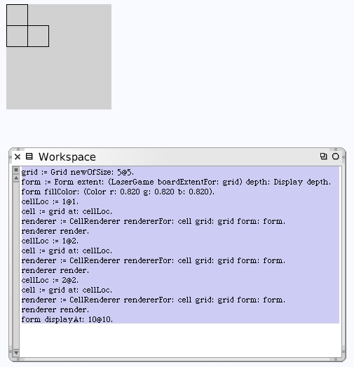
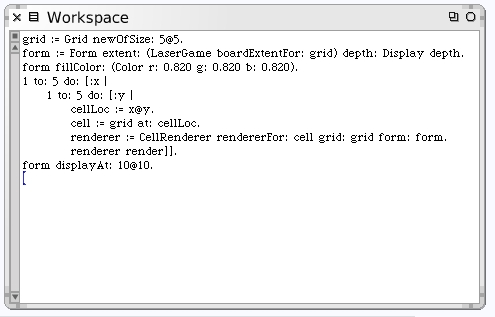
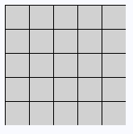
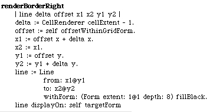
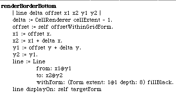
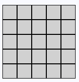

If we expand the workspace code to include some more cells, the cells appear to render correctly.
We can re-write the workspace code to try all of the cells.
It looks mostly correct except for the far right and bottom edges. The calculations appear to be off. In fact, none of the inside cells are right. Since each cell should have a 1 pixel border, the inside adjacent cell sides should all appear to be 2 pixels thick.
Here are the corrected methods for calculation of the right side and bottom borders.
 And sure enough when we re-run our workspace code the new drawing looks better.
